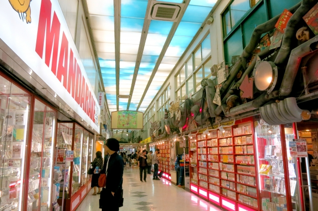

/関学女子サブカルチャー研究会 Everlasting Roses
オタクの女の子たちで集まって趣味を楽しむ団体です。
#春から関学
— 関西学院大学女子サブカルチャー研究会 (@Ebara801girls) February 18, 2020
オタク女子、集まれーー！！！
私たちEverlasting Rosesは、オタクらしくない外見のオタク女子ばかりです🌸オタクをしながらオシャレや化粧術も磨きましょう✨
会費はなく、活動も月1とゆるく入れるので兼部も可能！
気軽にDMもどうぞ！インカレも歓迎です！
/活動日
不定期です。
質問ありがとうございます！
— 関西学院大学女子サブカルチャー研究会 (@Ebara801girls) March 23, 2020
活動は主に学内でのミーティング（月一回）、学外ミーティング（不定期）で参加は自由です！
会費は一切かかりません🌸
リプやDMなどお待ちしています！ #Peing #質問箱 https://t.co/1MTC4l9pDG
/所属人数
17名